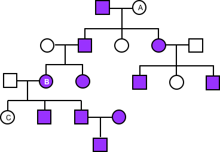
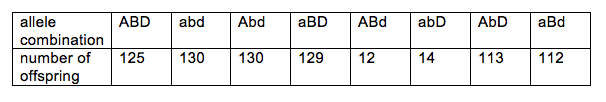
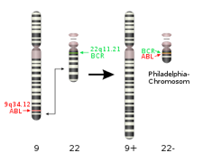
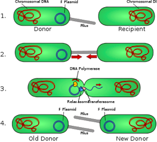

1
Complete the following sentence.
The following pedigree chart shows
that the trait under examination
would be:

Choose one answer.
| a. X-linked. | ||
| b. incomplete dominant. | ||
| c. Y-linked. | ||
| d. autosomal recessive. |
Question 2
Huntington's disease is a late
onset dominant disorder. Joe Doe's
father has Huntington's; no one has
Huntington's disease on the
mother's side of Joe's family. Use
a Punnett Square to predict the
probability that Joe inherited
Huntington's from his father.
Choose one answer.
| a. There is a 25% chance that Joe inherited Huntington's disease from his father. | ||
| b. There is a 50% chance that Joe inherited Huntington's disease from his father. | ||
| c. There is a 75% chance that Joe inherited Huntington's disease from his father. | ||
| d. There is a 100% chance that Joe inherited Huntington's disease from his father. |
Question 3
If you conduct a monohybrid cross,
(Aa x Aa), what is the probability
of getting either AA or Aa
genotypes?
Choose one answer.
| a. 2/3 | ||
| b. 4/4 | ||
| c. 3/4 | ||
| d. 1/4 |
Question 4
The inflated allele of the pod
shape gene is dominant (F); the
constricted allele of the pod shape
gene is recessive (f). The green
allele of the pod color gene is
dominant (G); the yellow allele of
the pod color gene is recessive
(g). Use a Punnett Square to
predict the genotype of the
offspring if two true breeding pea
plants are crossed: the first plant
has inflated green pods and the
second plant has constricted yellow
pods.
Choose one answer.
| a. The genotype of all offspring is Ff Gg. | ||
| b. 12.5% of the offspring has FfGg genotype. | ||
| c. The offspring has parental genotype. | ||
| d. The genotypic ratio is 3:1. |
Question 5
The inflated allele of the pod
shape gene is dominant (F); the
constricted allele of the pod shape
gene is recessive (f). The green
allele of the pod color gene is
dominant (G); the yellow allele of
the pod color gene is recessive
(g). Use Punnett Square to predict
the genotype of the offspring of
self pollinating FfGg pea plants.
Choose one answer.
| a. The genotype of all offspring is Ff Gg. | ||
| b. 12.5% of the offspring has FfGg genotype. | ||
| c. The offspring has parental genotype. | ||
| d. The genotypic ratio is 3:1. |
Question 6
What are the genotypes of A, B, and
C individuals in the following
family pedigree? Use F for the
dominant alleles and f for the
recessive alleles.

Choose one answer.
| a. The genotypes of individuals A and B are ff, and C is Ff. | ||
| b. The genotype of individual A is Ff, B is ff, and C is FF. | ||
| c. The genotypes of individuals A and B are Ff, and C is ff. | ||
| d. The genotype of individuals A and B are FF, and C is ff. |
Question 7
What fraction of the offspring will
express at least two recessive
traits, if a pea plant that is
heterozygous for the flower color
(purple is dominant and white is
recessive), for the seed color
(yellow is dominant and green is
recessive) and for the pod color
(green is dominant and yellow is
recessive) is self-pollinating?
Choose one answer.
| a. 3/4 | ||
| b. 1/8 | ||
| c. 3/32 | ||
| d. 7/64 |
Question 8
What fraction of the offspring will
express two recessive traits, if a
pea plant that is heterozygous for
the flower color (purple is
dominant and white is recessive),
for the seed color (yellow is
dominant and green is recessive),
and for the pod color (green is
dominant and yellow is recessive)
is self-pollinating?
Choose one answer.
| a. 3/32 | ||
| b. 1/16 | ||
| c. 3/8 | ||
| d. 1/4 |
Question 9
What percentage of the offspring is
a homozygote if both parents are
heterozygotes? Use a Punnett Square
to answer this question.
Choose one answer.
| a. 0% | ||
| b. 25% | ||
| c. 50% | ||
| d. 75% |
Question 10
You open your first greenhouse, and
you are eager to create new hybrid
plants to sell. You cross a
true-breeding tall, purple-flowered
rose with a true-breeding short,
white-flowered rose. All of your
offspring are short, pink-flowered
roses. What does this tell you
about the phenotypic expression of
these characteristics?
Choose one answer.
| a. The purple and the white alleles exhibit incomplete dominance, while the short allele is dominant to the tall allele. | ||
| b. The purple and the short alleles are dominant; otherwise, the offspring would be white and tall. | ||
| c. The pink and the white alleles are codominant; the short allele is dominant to the tall allele. | ||
| d. The purple and white alleles are recessive; the tall allele is subject to X-inactivation. |
Question 11
Complete the following sentence.
If you had a monohybrid cross
between two different individuals,
you would expect the genotypic
ratio to be:
Choose one answer.
| a. 1:2:1. | ||
| b. 9:3:3:1. | ||
| c. 3:1. | ||
| d. 4:0. |
Question 12
Complete the following sentence.
During the process of mitosis, a
plant daughter cell that starts out
with 50 chromosomes will end up
with:
Choose one answer.
| a. 100 chromosomes. | ||
| b. 25 chromosomes. | ||
| c. 75 chromosomes. | ||
| d. 50 chromosomes. |
Question 13
Complete the following sentence. If
you compare female and male
gametogeneses in humans, you can
determine that:
Choose one answer.
| a. female and male gametogeneses are homologous throughout: both result in four different gametes derived from the primary gametocyte through meiotic cell division. | ||
| b. female and male gametogeneses are homologous, because both result in the production of gametes through meiosis; however, while one primary spermatocyte gives rise to four sperm cells, one primary oocyte gives rise to only one oocyte. | ||
| c. female and male gametogeneses are not homologous, because one primary spermatocyte gives rise to four sperm cells, while one primary oocyte gives rise to only one oocyte. | ||
| d. female and male gametogeneses are not homologous, because one primary spermatocyte gives rise to four sperm cells through meiosis; one primary oocyte gives rise to the secondary oocyte through meiosis, but the oocyte is the result of mitotic cell division. |
Question 14
Cystic fibrosis is an inherited
autosomal recessive disease. Assume
that a mother has cystic fibrosis
and that there is a technique to
analyze the polar bodies for the
presence of the cystic fibrosis
alleles. Is it possible to
determine if the oocyte has a
cystic fibrosis allele through the
analysis of the polar bodies? Why,
or why not?
Choose one answer.
| a. Yes, it is possible, because the polar bodies and the oocyte are daughter cells that are derived from the parental primary oocyte through cell division. | ||
| b. Yes, it is possible but only from the second polar body, because it is genetically identical to the oocyte. | ||
| c. No, it is not possible, because the polar bodies and the oocyte are daughter cells that are derived from the parental primary oocyte through meiosis. | ||
| d. No, it is not possible from the second polar body, but it is possible to determine from the first polar body. |
Question 15
Fill in the blank. In meiosis I,
_______ determines the number of
chromosomes in the gametes. This is
an essential process that serves to
keep the same number of chromosomes
in the embryo that will be formed
when the gametes get together.
Choose one answer.
| a. equational division | ||
| b. reductional division | ||
| c. kinetochore separation | ||
| d. polar separation |
Question 16
Fruit flies and grasshoppers are
diploid organisms. The haploid
number of fruit flies is 4, and the
haploid number of grasshoppers is
23. If no crossing over takes
place, which organism produces a
greater variety of zygotes, and
why?
Choose one answer.
| a. The grasshoppers, because 223 times 223 is greater than 24 times 24 | ||
| b. The grasshoppers, because 223 is greater than 24 | ||
| c. The grasshoppers, because 2 times 23 is greater than 2 times 4 | ||
| d. The fruit flies, because they have a smaller haploid number |
Question 17
Grasshoppers have 23 homologous
chromosome pairs. Assuming that no
crossing over takes place, how many
genetically different gametes can
potentially be made by a
grasshopper?
Choose one answer.
| a. 223 | ||
| b. 232 | ||
| c. 46 | ||
| d. 4 |
Question 18
How many unique daughter cells
result from meiotic or mitotic cell
division of a cell, which has three
homologous chromosome pairs?
Choose one answer.
| a. Both mitosis and meiosis results in daughter cells that are identical to each other and to the parental cell; thus, there will be no unique daughter cells. | ||
| b. There will be no unique daughter cells after mitosis; there will be four different daughter cells after meiosis, and these cells will also be different from the parental cell. | ||
| c. There will be no unique daughter cells after meiosis; there will be eight different daughter cells after mitosis, and these cells will also be different from the parental cell. | ||
| d. There will be no unique daughter cells after mitosis; there will be six different daughter cells after meiosis, and these cells will also be different from the parental cell. |
Question 19
Which of the following is less
prone to cancer development, and
why?
Choose one answer.
| a. Epithelial tissue, because the tumor suppressor level is higher than the protooncogen level in this tissue | ||
| b. Lymphatic cell, because the lymphatic system is not exposed to UV radiation | ||
| c. Neuronal tissue, because the cell proliferation is low in the neuronal tissue | ||
| d. Tendon, because oncogens cannot induce excessive cell division in this tissue due to special constraints |
Question 20
Which of the following statements
best describes a mutation that
contributes to cancer development?
Choose one answer.
| a. The conversion of a tumor suppressor to an oncogene contributes to cancer development, because oncogenes turn on the cell cycle check point genes. | ||
| b. The conversion of an oncogene to a proto-oncogene contributes to cancer development, because this results in excessive cell cycle control. | ||
| c. The overexpression of a proto-oncogene contributes to cancer development, because proto-oncogenes turn off the cell cycle check point genes. | ||
| d. The overexpression of an oncogene contributes to cancer development, because this results in excessive cell division. |
Question 21
You are a geneticist who uses
Neurospora to study
recombination, and you observe the
following spore color patterns.
Note that Ascus is the package that
the spores were formed in. What do
you conclude from this diagram?

Choose one answer.
| a. Crossing over occurred as Ascus B was forming but did not occur in Ascus A. | ||
| b. Crossing over did not occur. | ||
| c. Crossing over occurred as Ascus A was forming but did not occur in Ascus B. | ||
| d. Crossing over occurred as Ascus A and Ascus B were forming. |
Question 22
Complete the following sentence.
Mendel's law of independent
assortment indicates that:
Choose one answer.
| a. genes separate during gamete formation. | ||
| b. allele pairs separate during gamete formation. | ||
| c. genes mix through crossing-over. | ||
| d. alleles are either recessive or dominant. |
Question 23
A hair color gene with allele B for
black and b for brown pigment
determines the hair pigment in many
mammals, e.g., in rodents and doe.
Another gene, which is responsible
for the pigment deposition,
determines whether the hair is
actually pigmented or not: D allele
of this gene allows pigment
deposition, while d allele does not
support pigment deposition into the
hair shaft. A dd genotype of these
animals will have white hair
regardless of any B and b alleles
expressed. This is an example of
which of the following?
Choose one answer.
| a. Epistasis | ||
| b. Epigenetics | ||
| c. Dominance | ||
| d. Imprinting |
Question 24
A man has blood type A, his wife
has blood type B, and their
daughter has blood type O. The
husband files for divorce on the
grounds of infidelity, believing
that this may not be his biological
daughter. Can genetics provide
evidence supporting the man's case?
Why, or why not?
Choose one answer.
| a. Genetics cannot support the man's case based on the blood types in this family: A and B alleles are dominant over O allele; thus, O blood type is a possibility for the child if both parents are heterozygotes. | ||
| b. Genetics can support the man's case based on the blood types in this family: A and B alleles are co-dominant; thus, the child should have AB blood type. O blood type is not a possibility for the child. | ||
| c. Genetics cannot support the man's case based on the blood types: blood type alleles are co-dominant; thus, the child should have ABO genotype. | ||
| d. Genetics can support the man's case based on the blood types: the inheritance of A and B alleles are incomplete dominant; thus, the child of A and B blood type parents must have AB blood type. |
Question 25
Complete the following sentence.
For most genes, we inherit two
working copies: one from our mother
and one from our father. With
imprinted genes, we only inherit
one working copy. Every imprinted
allele:
Choose one answer.
| a. is reset during gamete formation. | ||
| b. may come from either parent by chance. | ||
| c. is identical to the parental imprinted allele. | ||
| d. stays imprinted during gamete formation. |
Question 26
Complete the following sentence.
Gene penetrance refers to a portion
of people:
Choose one answer.
| a. with an allele who exhibit a trait associated with the allele. | ||
| b. with a trait that is associated with multiple genes. | ||
| c. who exhibit a particular trait in a population. | ||
| d. who has a particular allele in a population. |
Question 27
Fill in the blanks. A continuous
phenotypic character, e.g., skin
color, suggests ____ inheritance;
discrete phenotypes, e.g., white
and purple pea plant flowers,
suggest ____ inheritance.
Choose one answer.
| a. epistatic, imprinted | ||
| b. recessive, dominant | ||
| c. epigenetic, autosomal | ||
| d. multigenic, single gene |
Question 28
Jane Doe and Joe Doe both have
normal color vision, but their
young daughter, Sue, has red-green
color blindness. Joe wants a
divorce, because he believes that
he is not the biological father of
Sue, but Jane is in denial. Can a
simple Punnet Square provide
supporting evidence for Jane or
Joe? Why, or why not?
Choose one answer.
| a. Yes it can. The red-green color blindness allele is dominant, and it is on the X-chromosome; thus, little Sue's biological father or mother must be red-green colorblind. Joe is not the biological father, because Jane is not red-green colorblind. | ||
| b. No, it cannot. Red-green color blindness is a recessive autosomal condition; thus, if both parents are carriers, then there is a 50% chance that their daughter would be red-green color blind. | ||
| c. No, it cannot. Red-green color blindness is maternally imprinted; thus, if Jane is a heterozygote, then there is a 50% chance that their daughter would be color blind. | ||
| d. Yes, it can. Red-green color blindness allele is recessive, and it is on the X-chromosome; thus, little Sue's biological father must be red-green colorblind. Joe is not the biological father. |
Question 29
Recent research shows that genomic
DNA is highly methylated in normal
cells, except the GC-rich reach
regions. In contrast, cancer cells
are highly methylated in their
GC-rich genomic regions as well,
but lamin-bound DNA becomes
de-methylated in cancer cells. The
initial DNA expression differences
in normal and cancer cells are
attributed to the differences in
their DNA methylation levels. This
is an example of which of the
following?
Choose one answer.
| a. Epigenetic inheritance | ||
| b. Mendelian inheritance | ||
| c. Genomic imprinting | ||
| d. Genomic silencing |
Question 30
Recessive lethal genes were first
discovered in 1905 in mice. Which
of the following observations led
to their discovery?
Choose one answer.
| a. The altered phenotypic ratios from what was expected for dominant and/or Mendelian inheritance | ||
| b. The reduced fertility of the homozygous recessive lethal mice | ||
| c. The altered genotypic ratios from what was expected for dominant and/or Mendelian inheritance | ||
| d. The reduced number of individuals in the laboratory mice population |
Question 31
What are the genotypes of A, B, and
C individuals in the following
family pedigree? Use F for the
dominant allele and f for the
recessive allele.

Choose one answer.
| a. A is XFXf, B is XfXf, and C is XFXf. | ||
| b. A is XFXF or XFXf, B is XFXf, and C is XFXF or XFXf | ||
| c. A is XFXf, B is XFXf, and C is XFXF or XFXf. | ||
| d. A and C are XfXf, and B is XFXf. |
Question 32
What is the inheritance pattern of
the trait in the following
pedigree?

Choose one answer.
| a. Dominant | ||
| b. Mitochondrial | ||
| c. Recessive | ||
| d. X-linked |
Question 33
If a human (who is diploid) has
type A blood and he or she marries
another person with type B blood,
what are the possible blood types
of their offspring?
Choose one answer.
| a. A, B, and O | ||
| b. AB only | ||
| c. A and B only | ||
| d. A, B, AB, and O |
Question 34
Complete the following sentence.
Crossing over cannot increase
genetic variety if:
Choose one answer.
| a. it takes place during gamete formation. | ||
| b. kinetochore microtubules pull the sister chromatids away from each other very fast. | ||
| c. the exchanged chromosome segments are identical. | ||
| d. homologous non-sister chromatids exchange segments. |
Question 35
Genes A, B, and C are located on
the same chromosome, and the
recombination frequencies between A
and B is 46% and between A and C is
13%. Is it possible to determine
the linear order of these genes on
the chromosome? Why, or why not?
Choose one answer.
| a. Yes, we can conclude from the recombination frequencies that the order of the genes is ACB. | ||
| b. Yes, we can conclude from the recombination frequencies that the order of the genes is CAB. | ||
| c. No, there is not enough data available; the order of the genes can be either ACB or CAB. | ||
| d. No, there is not enough data available; the order of the genes can be either ACB or BCA. |
Question 36
In a three-point test cross, one
parent is triple heterozygote for
three genes that are on the same
chromosome and the other parent is
homozygous recessive for the same
three genes. The dominant alleles
of these genes are A, B, and D; the
recessive alleles are a, b, and d.
The following table shows how many
offspring express certain
alleles:
How far are the A and B genes from each other?
How far are the A and B genes from each other?

Choose one answer.
| a. 4.8 cM | ||
| b. 47.5 cM | ||
| c. 0.9 cM | ||
| d. 23.7 cM |
Question 37
In a three-point test cross, one
parent is triple heterozygote for
three genes that are on the same
chromosome and the other parent is
homozygous recessive for the same
three genes. The dominant alleles
of these genes are A, B, and D; the
recessive alleles are a, b, and d.
The following table shows how many
offspring express certain
alleles:
How far are the B and D genes from each other?

How far are the B and D genes from each other?
Choose one answer.
| a. 4.8 cM | ||
| b. 47.5 cM | ||
| c. 41.2 cM | ||
| d. 2.4 cM |
Question 38
The recessive A and B genes are
located on the same chromosome, and
a testcross is set up with a double
heterozygous individual to
determine the relative distance
between these two genes. The test
cross results in 396 offspring that
are phenotypically wild type; 400
offspring that express both
recessive traits; 96 offspring that
express the recessive trait for A
gene but are wild type for B; and
104 offspring that express the
recessive trait for B gene but are
wild type for A. What is the
relative distance of A and B genes
on the chromosome in centimorgan?
Choose one answer.
| a. 25 cM | ||
| b. 20 cM | ||
| c. 10 cM | ||
| d. 12.5 cM |
Question 39
The recessive alleles crossveinless
(cv) and white
(w) are on the
Drosophila melanogaster X
chromosome. The phenotype of
Xcv+w+Y fly is wild
type; the phenotype of
Xcv-w+Y fly is
crossveinless; and the phenotype of
Xcv+w-Y fly is white
eyed. You want to determine the
distance of cv and
w, so you set up a cross
between a
Xcv-w+Xcv+w-
female and a wild type male. The
male offspring of this cross fall
into four groups based on their
phenotype: there are 32 wild type
males, 28 white eyed and
crossveinless males, 275
crossveinless males, and 265 white
eyed males. What is the relative
distance of the crossveinless and
white eye alleles on the X
chromosome in Drosophila
melanogaster?
Choose one answer.
| a. 10 cM | ||
| b. 6 cM | ||
| c. 12 cM | ||
| d. 20 cM |
Question 40
What biological process separates
genes that are on the same
chromosome?
Choose one answer.
| a. Crossing over | ||
| b. Epistasis | ||
| c. Crosslinking | ||
| d. Epigenetics |
Question 41
Which of the following statements
regarding crossing over is true?
Choose one answer.
| a. All crossing over is genetic recombination. | ||
| b. All genetic recombination is crossing over. | ||
| c. The appearance of non-parental phenotype combinations is always the result of crossing over. | ||
| d. The disappearance of non-parental phenotype combinations is always the result of crossing over. |
Question 42
Which of the following statements
regarding the recombination
frequency during meiosis is true?
Choose one answer.
| a. The recombination frequency is higher between genes that are close to each other during meiosis. | ||
| b. The recombination frequency is higher in prokaryotes than in eukaryotes during meiosis. | ||
| c. The recombination frequency is random throughout the genome during meiosis. | ||
| d. The recombination frequency is more frequent in certain regions of the genomes during meiosis. |
Question 43
You are given the following
information on genetic distances
between paired genes under study. A
and B are 22 cM apart; A and C are
12 cM apart; A and D are 5.9 cM
apart; and D and C are 6.1 cM
apart. If you use this information
to construct a genetic map, what is
the order of genes on this
chromosome?
Choose one answer.
| a. A D C B or B C D A | ||
| b. A C B D or D B C A | ||
| c. A D B C | ||
| d. D B C A |
Question 44
You want to create a chromosome
map that reveals the relationships
between four different genes: A, B,
G, and H. Through controlled
crosses, you learn that A and H are
17.9 cM apart; A and B are 10 cM
apart; B and H are 7.9 cM apart; A
and G are 2.5 cM apart; and H and G
are 20.4 cM apart. In which order
are your genes located?
Choose one answer.
| a. H, B, A, G | ||
| b. B, H, G, A | ||
| c. A, B, H, G | ||
| d. B, H, A, G |
Question 45
Complete the following sentence.
Most prokaryotes reproduce
asexually and are:
Choose one answer.
| a. triploid. | ||
| b. diploid. | ||
| c. haploid. | ||
| d. aneuploid. |
Question 46
Fill in the blanks. Karyotyping
requires condensed chromosomes;
thus, karyotyping uses cells that
are in either the _____ stage or
the _____ stage of mitosis.
Choose one answer.
| a. anaphase, telophase | ||
| b. prointerphase, interphase | ||
| c. metaphase, prometaphase | ||
| d. cytokinesis, telophase |
Question 47
The following image shows the
primary spermatocyte of a diploid
organism that has two homologous
chromosome pairs. Cell division of
the primary spermatocyte gives rise
to the sperm cells in panels A
through D. Which frequencies of
sperm cells with a different number
of chromosomes is the result of
non-disjunction during meiosis II?

Choose one answer.
| a. A | ||
| b. B | ||
| c. C | ||
| d. D |
Question 48
The most common aneuploidies in
humans are trisomies. Trisomies
result in how many chromosomes?
Choose one answer.
| a. 47 | ||
| b. 43 | ||
| c. 46 | ||
| d. 44 |
Question 49
The Philadelphia chromosome
influences the structure of human
chromosomes 9 and 22, and it causes
a rare form of leukemia. Study the
following image, and then answer
the question: What is the correct
term to describe the chromosomal
changes that lead to the formation
of the Philadelphia chromosome?

Choose one answer.
| a. Exchange | ||
| b. Inverse translocation | ||
| c. Reciprocal translocation | ||
| d. Transposition |
Question 50
There are many different types of
chromosomal changes, including
balanced structural changes, where
there is an equal exchange of
material, and unbalanced structural
changes, where there is an addition
or a loss of chromosomal segments.
Which of the following is an
example of unbalanced structural
changes?
Choose one answer.
| a. Duplication | ||
| b. Inversion | ||
| c. Inversion | ||
| d. Mutation |
Question 51
What are the correct terms to
describe the chromosomal changes
shown on the following image?

Choose one answer.
| a. 1. deletion, 2. duplication, and 3. inversion | ||
| b. 1. addition, 2. replication, 3. crossing | ||
| c. 1. loss, 2. insertion, 3. translocation | ||
| d. 1. elimination, 2. doubling, 3. reciprocal inversion |
Question 52
What are the correct terms to
describe the chromosomal changes
shown on the following image?

Choose one answer.
| a. 1. inverse deletion and 2. translocation | ||
| b. 1. translocation and 2. reciprocal translocation | ||
| c. 1. transposition and 2. exchange | ||
| d. 1. elimination and 2. reciprocal inversion |
Question 53
What medical condition may be
diagnosed by examining the
following image?

Choose one answer.
| a. Klinefelter syndrome | ||
| b. Edward's syndrome | ||
| c. Patau syndrome | ||
| d. Down syndrome |
Question 54
You create a karyotype on a pair of
cells: one of which is a somatic
cell from the parent and the other
of which is from a gamete of that
same plant. Your initial banding
pattern focuses on a certain order
of genes that are under study. The
order from the parent plant is C,
E, G, H, P. The order from the
gamete is C, H, G, E, P. What type
of mutation caused this pattern in
the gamete?
Choose one answer.
| a. Duplication | ||
| b. Deletion | ||
| c. Inversion | ||
| d. Aneuploidy |
Question 55
Down syndrome results most often
from which of the following?
Choose one answer.
| a. Nondisjunction during meiosis | ||
| b. Nondisjunction during mitosis | ||
| c. Folic acid deficiency | ||
| d. Maternal allele inheritance |
Question 56
After 25 PCR cycles, how much DNA
is produced?
Choose one answer.
| a. 25 times more | ||
| b. 225 times more | ||
| c. 252 times more | ||
| d. 50 times more |
Question 57
Compare and contrast in vivo and in
vitro DNA duplication.
Choose one answer.
| a. The in vivo process always takes place in a cell; the in vitro process always takes place in a thermocycler. | ||
| b. The in vitro process may involve thermostable DNA polymerase; the in vivo process always utilizes DNA polymerase isolated from Thermus aquaticus. | ||
| c. The in vivo process uses ribonucleotide primer; the in vitro process uses oligonucleotide primer for DNA polymerase. | ||
| d. The in vivo process does not use dNTPs; the in vitro process uses dNTPs. |
Question 58
Complete the following sentence.
Barbara McClintock performed
experiments using maize (corn) with
different phenotypes of kernel
color. She found that the
phenotypic effect of one element
(Ds) depended on the presence of
another element (Ac). However, she
had problems mapping these elements
onto the chromosomes, because:
Choose one answer.
| a. it is technically difficult to determine the phenotypes. | ||
| b. the structure of the dsDNA was not known yet. | ||
| c. these elements were jumping on the chromosomes. | ||
| d. Ds and Ac cancelled each other out. |
Question 59
Complete the following sentence.
Microsatellites - otherwise known
as simple sequence tandem repeats
(SSTRs) - are generally di-, tri-,
or tetranucleotides.
Microsatellites are useful as
genetic markers, because:
Choose one answer.
| a. they never contain mistakes. | ||
| b. they are highly variable. | ||
| c. they are short. | ||
| d. they are long. |
Question 60
DNA microarrays are used to do
which of the following?
Choose one answer.
| a. To identify point mutations | ||
| b. To analyze DNA fingerprints | ||
| c. To amplify genomic DNA | ||
| d. To analyze differential gene expression in tissues |
Question 61
Fill in the blanks. _________ are
circular extrachromosomal DNA
molecules that are present in
varying numbers in the cell, and
they can be entirely lost without
changing species identity. _____DNA
is usually linear, and it
determines species identity.
Choose one answer.
| a. Plasmids, Nuclear | ||
| b. Mitochondrials, Nuclear | ||
| c. Organelles, Chromosomal | ||
| d. Plastids, Chromosomal |
Question 62
PCR is the most commonly used DNA
amplification technique. Which of
the following lists the steps of
PCR in the correct order?
Choose one answer.
| a. Polymerization, denaturation, melting | ||
| b. Melting, base-pairing, elongation | ||
| c. Annealing, melting, polymerization | ||
| d. Denaturation, annealing, elongation |
Question 63
The following image outlines
conventional breeding,
transgenesis, and cisgenesis. The
aim of all of these techniques is
to generate an organism with
desired traits. Which of the
following technologies uses
recombinant DNA?

Choose one answer.
| a. Cisgenesis only | ||
| b. Transgenesis only | ||
| c. Transgenesis and cisgenesis | ||
| d. Transgenesis and conventional breeding |
Question 64
The following image outlines the
transposition of mobile elements.
Which of the following accurately
identifies the names of mobile
elements in boxes A and B?

Choose one answer.
| a. B shows a transposon, and A shows a retrotransposon. | ||
| b. A shows a transposon, and B shows a retrotransposon. | ||
| c. A shows a transposon, and B shows a duplicating transposon. | ||
| d. B shows a duplicating transposon, and A shows a retrotransposon. |
Question 65
The organization of the nuclear
genome is not randomized. Recent
genome studies have revealed
general patterns between organisms.
Which of the following is NOT a
domain that was noticed?
Choose one answer.
| a. Interchromatine | ||
| b. Chromosome | ||
| c. Nucleolus | ||
| d. Plasmid |
Question 66
Which of the following statement
best describes recombinant DNA?
Choose one answer.
| a. Recombinant DNA always combines DNA from at least two sources. | ||
| b. Recombinant DNA is the end-result of every cloning process. | ||
| c. Recombinant DNA always uses a restriction endonuclease and a ligase. | ||
| d. Recombinant DNA is always made in the test tube, not in a living cell. |
Question 67
Which of the following statements
about class II transposons is true?
Choose one answer.
| a. Class II transposons are segments of DNA that move from one place to another through the cut-and-paste mechanism. | ||
| b. Class II transposons are characterized by their short lengths and stretch of 15 base pairs that occur at each end of the transposon. | ||
| c. Class II transposons are part of a highly unique group that forms large portions of the genomes of eukaryotes. | ||
| d. Class II transposons are incorporated through retrotransposition. |
Question 68
Which of the following statements
describes mutations?
Choose one answer.
| a. It only takes one mutation of one base pair to make a large difference in protein production. | ||
| b. In order to detect a mutation, at least three base pairs must change at the same time. | ||
| c. Populations are often filled with individuals that have a mutation in the first base of the triplet codon, because this does not make much of a difference in how the protein is made. | ||
| d. Silent mutations most often happen in the second base of the triplet codon. |
Question 69
Complete the following sentence.
The "one gene, one enzyme" theory
suggests that:
Choose one answer.
| a. each gene codes for one characteristic. | ||
| b. every gene can be correlated to a trait that it impacts. | ||
| c. each gene codes for the production of a specific enzyme. | ||
| d. every gene codes for an enzyme that will impact only one trait. |
Question 70
Complete the following sentence.
During the process of bacterial
conjugation, genetic material is
transferred in a unidirectional way
from the donor to a recipient. This
happens through:
Choose one answer.
| a. viral transduction. | ||
| b. transformation. | ||
| c. R-factor. | ||
| d. F-factor. |
Question 71
Complete the following sentence.
Gene transfer in bacteria is
unidirectional, with DNA moving
from the donor cell to the
recipient cell. Most of the time
the donor only gives a part of the
DNA, making a:
Choose one answer.
| a. merozygote. | ||
| b. homologous pair. | ||
| c. heterozygote. | ||
| d. disomy. |
Question 72
Complete the following sentence.
Transduction is the transfer of
genetic information in bacteria
from a donor to a recipient
through:
Choose one answer.
| a. a host DNA. | ||
| b. a bacteriophage. | ||
| c. a nuclease. | ||
| d. a virulent strain. |
Question 73
Frederick Griffith published his
observation in 1928 that the
nonpathogenic R strain of
Streptococcus pneumonia is
converted to S pathogenic strain,
if the live R strain is mixed with
dead S strain bacteria. Griffith's
experiment describes which of the
following?
Choose one answer.
| a. Transfection | ||
| b. Induction | ||
| c. Transformation | ||
| d. Transposition |
Question 74
Panels 4 through 6 of the image
below illustrate which of the
following biological processes?

Choose one answer.
| a. Transfection | ||
| b. Transduction | ||
| c. Induction | ||
| d. Transposition |
Question 75
The image below illustrates which
of the following biological
processes?

Choose one answer.
| a. Conjugation | ||
| b. Transformation | ||
| c. Transduction | ||
| d. Mating |
Question 76
The image below shows gene
expression regulation in bacteria.
Which of the following statements
best describes this process?

Choose one answer.
| a. This is the Trp operon, which is repressed by tryptophan (5). Tryptophan inactivates the RNA polymerase (2) by removing it from the DNA and leaving the transcription factor (3) behind. | ||
| b. This is the Trp operon (4), which is repressed by tryptophan (5). Tryptophan inactivates the RNA polymerase (2) by removing it from the DNA and leaving the transcription factors (3 and 4) behind. | ||
| c. This is the Lac operon, which is induced by allolactose (5). Allolactose inactivates the repressor (2) and allows the RNA polymerase (3) to transcribe the genes. | ||
| d. This is the Lac operon (4), which is induced by lactose (5). Lactose inactivates the repressor (2) and allows the RNA polymerase (3) to transcribe the genes. |
Question 77
Which of the following is not used
to experimentally manipulate gene
expression in bacteria?
Choose one answer.
| a. Transfection | ||
| b. Transduction | ||
| c. Induction | ||
| d. Conjugation |
Question 78
Which of the following statements
best describes bacteria?
Choose one answer.
| a. Introns are removed from the transcript before translation begins. | ||
| b. Genes that play a role in the same metabolic pathway are organized into an operator. | ||
| c. The expression of genes that play a role in the same metabolic pathway is orchestrated by upstream enhancers. | ||
| d. Genes that play a role in the same metabolic pathway are organized into an operon. |
Question 79
Certain species of bacteria always
have the ability to utilize lactose
as a carbon source. These species
can do this with the help of which
of the following?
Choose one answer.
| a. The Lac operator | ||
| b. Positive feedback | ||
| c. Negative feedback | ||
| d. The Lac operon |
Question 80
Complete the following sentence. A
library of yeast with transposons
randomly integrated into yeast
genes:
Choose one answer.
| a. produces overexpression mutants and is also a tool to analyze the natural expression of that gene if the transposon has a reporter gene. | ||
| b. generates jumping genes and mosaic yeast cell; this is similar to the transposon effect in corn that makes color-colorless strikes in seeds. | ||
| c. generates transgenic yeast that glows in the dark; thus, it attracts great interest in the bakeries. | ||
| d. produces gene disruption mutants and is also a tool to analyze the expression of that gene if the transposon has a reporter gene. |
Question 81
Complete the following sentence.
Barr bodies, found in mammalian
females, are interpreted as
inactivated:
Choose one answer.
| a. Y chromosomes. | ||
| b. X chromosomes. | ||
| c. somatic chromosomes. | ||
| d. autosomes. |
Question 82
Complete the following sentence.
Genes within the chloroplast,
mitochondria, and nucleus can be
transferred back and forth between
the organellar and nuclear genomes.
Researchers know this, because:
Choose one answer.
| a. they have physically seen the crossover events on electron micrographs. | ||
| b. they found genes in the chloroplast that were known to be mitochondrial. | ||
| c. the endosymbiosis hypothesis predicts such gene transfers. | ||
| d. proper organellar function requires nuclear gene products. |
Question 83
Complete the following sentence.
The C-value paradox states that:
Choose one answer.
| a. as the body of an organism becomes more complex, the size of the genome will increase. | ||
| b. there can be a large difference in the size of the genome even between organisms that are similar in body pattern and size. | ||
| c. as the body of an organism becomes more complex, the size of the genome will decrease. | ||
| d. prokaryotic genome is not always smaller than the eukaryotic genome. |
Question 84
Complete the following sentence.
The fugu genome is 400 Mb and the
human genome is 3,000 Mb, and both
the fugu and the human genomes have
about 30,000 genes. The fugu genome
can accommodate the same number of
genes as the human genome, because:
Choose one answer.
| a. only the regulatory regions of the genes differ in animals; all animals have the same number of genes. | ||
| b. the fugu genome has less exon and less intergene space. | ||
| c. the fugu genome has smaller introns, less intergene space, and fewer repeats. | ||
| d. the fugu genome has no intergene space and no repeats. |
Question 85
Identify the analytical technique,
which is illustrated on the figure.

Choose one answer.
| a. Yeast two-hybrid system | ||
| b. Eukaryotic UAS-Gal4 control | ||
| c. Bacterial transcriptional activation | ||
| d. Plant gene induction |
Question 86
The image below illustrates which
of the following biological
processes?

Choose one answer.
| a. Series of bacterial conjugation | ||
| b. A theory for the origin of eukaryotes | ||
| c. A theory for the origin of prokaryotes | ||
| d. Plasmid multiplication in fused bacteria |
Question 87
What percentage of the genes that
you find in humans do you also find
in flies and in mice?
Choose one answer.
| a. Approximately 50% in flies and 99% in mice | ||
| b. 0% in flies and 75% in mice | ||
| c. Approximately 10% in flies and 75% in mice | ||
| d. 100% in both flies and mice |
Question 88
Which of the following best
describes the difference between a
locus and an allele?
Choose one answer.
| a. A locus refers to the location on the chromosome, whereas an allele is used to refer to the alternative forms that a gene comes in. | ||
| b. An allele refers to the location on the chromosome, whereas the term locus refers to the alternative forms of the gene. | ||
| c. A locus refers to the phenotype of the organism, whereas an allele refers to the genotype. | ||
| d. None of these answers |
Question 89
Which of the following was the
first transgenic animal that was
available to the American public?
Choose one answer.
| a. GloFish | ||
| b. Glowing bacteria | ||
| c. Glow in the dark cats | ||
| d. Glowing mice |
Question 90
Complete the following sentence.
Neurospora works well for
genetics studies, because:
Choose one answer.
| a. it spends most of its life cycle in diploid condition. | ||
| b. it spends most of its life cycle in the haploid condition. | ||
| c. when the zygote undergoes mitosis or meiosis, it spreads. | ||
| d. its genome is sequenced. |
Question 91
A population of pink and brown
butterflies lives in a forest,
where the butterflies try to blend
in with the trees. Over time, birds
find the butterflies to be a tasty
source of food. What do you predict
will happen to the butterfly
population?
Choose one answer.
| a. They will not change color. | ||
| b. They will turn pink. | ||
| c. They will turn brown. | ||
| d. None of these answers |
Question 92
Complete the following sentence.
Evolutionary relationships are
often investigated through
non-coding DNA sequence data,
because:
Choose one answer.
| a. these regions commonly show evidence of horizontal gene transfer; thus, they simplify the tree construction. | ||
| b. the repeats in these regions simplify the in silico sequence analysis. | ||
| c. there are more non-coding regions than coding regions; thus, this approach offers more data to work with. | ||
| d. mutations in these regions are less influenced by natural selection. |
Question 93
Complete the following sentence. In
2006, news agencies reported on the
failure of Bt-cotton crop in India
after extreme environmental stress.
The crop's survival chance was
lower because of:
Choose one answer.
| a. harsh weather that no other crop could survive. | ||
| b. endotoxin toxicity. | ||
| c. the low diversity in the population. | ||
| d. the sudden diversity increase in the population. |
Question 94
Complete the following sentence. We
can expect genetic differences
between human groups that have been
geographically separated through
human history. However, such
differences, if any, would
disappear because of:
Choose one answer.
| a. genetic drift. | ||
| b. the gene flow. | ||
| c. growing human populations. | ||
| d. nonrandom mating. |
Question 95
Fill in the blanks. We can expect
an increase in the frequency of
recessive disorders in a _____
population, particularly if _____
is in play.
Choose one answer.
| a. small, the founder effect | ||
| b. small, nonrandom mating | ||
| c. large, the bottleneck effect | ||
| d. large, genetic drift |
Question 96
New genetic variation within
populations is mainly caused by
which of the following?
Choose one answer.
| a. Mutation | ||
| b. Emigration | ||
| c. The founder effect | ||
| d. The bottle neck effect |
Question 97
What are the frequencies of A and a
alleles in a population which has
50% AA, 25 % aa, and 25 % Aa
individuals?
Choose one answer.
| a. 25% for the A allele and 75% for the a allele | ||
| b. 37.5% for the A allele and 62.5% for the a allele | ||
| c. 62.5% for the A allele and 37.5% for the a allele | ||
| d. 75% for the A allele and 25% for the a allele |
Question 98
What can be said about "p" and "q"?
Choose one answer.
| a. p + q = 1 | ||
| b. 2pq = 1 | ||
| c. p - q = 0 | ||
| d. p + 2pq + q = 0 |
Question 99
Which of the following decreases
the variety in a population?
Choose one answer.
| a. Stabilizing selection | ||
| b. Bidirectional selection | ||
| c. Disruptive selection | ||
| d. Directional selection |
Question 100
Which of the following statements
about genotype and allele
frequencies is true?
Choose one answer.
| a. Genotype frequency is always the same as phenotypic frequency. | ||
| b. Genotype frequency and phenotypic frequency are different. | ||
| c. Allele frequency always determines gene frequency. | ||
| d. Allele frequency always determines phenotypic frequency. |
Question 101
Which of the following will not
impact the allele frequencies in a
population?
Choose one answer.
| a. Founder effects | ||
| b. Nonrandom mating | ||
| c. Bottleneck effect | ||
| d. Genetic drift |
Question 102
Complete the following sentence. A
population will stay in
Hardy-Weinberg equilibrium if:
Choose one answer.
| a. the population is evolving. | ||
| b. the population is not evolving. | ||
| c. the population is large. | ||
| d. there is more than one species in the population. |